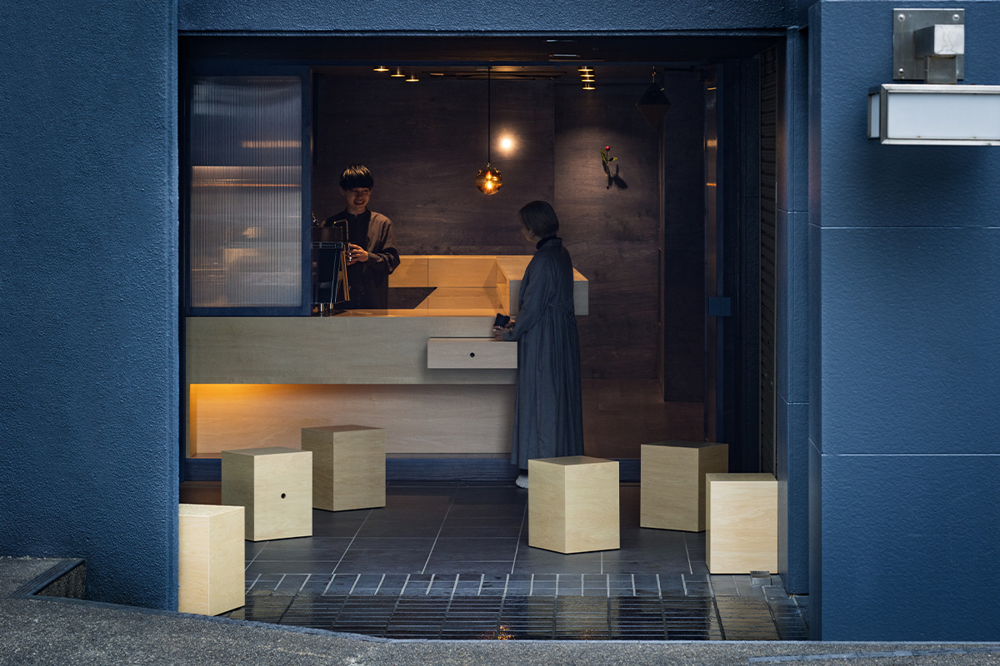
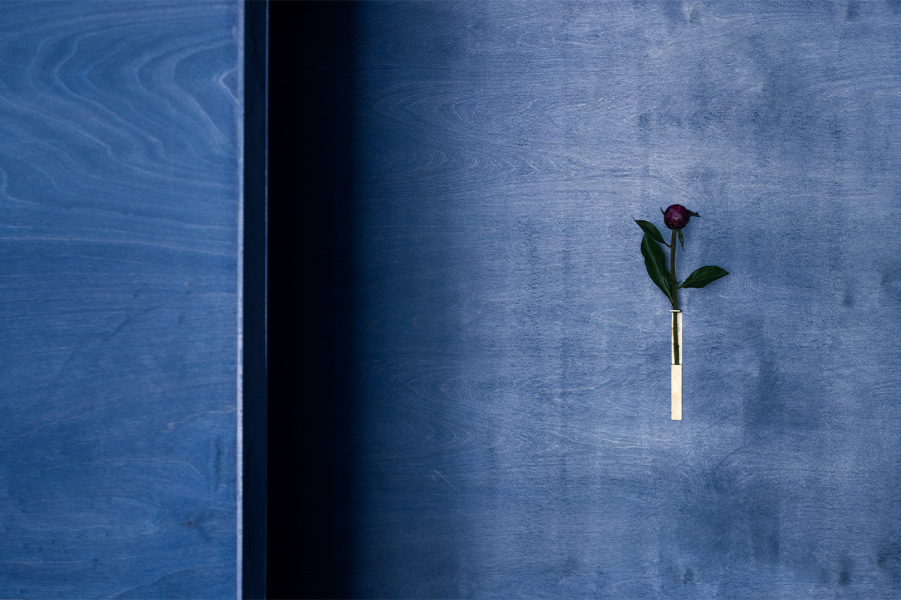
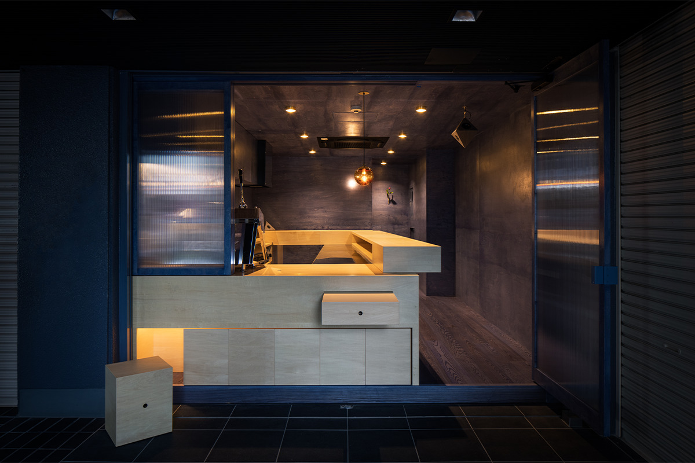
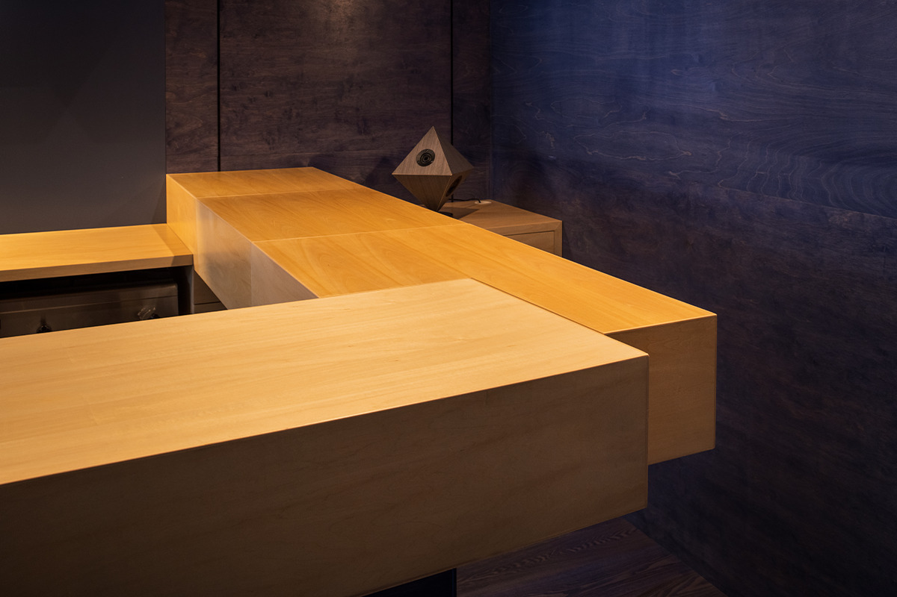
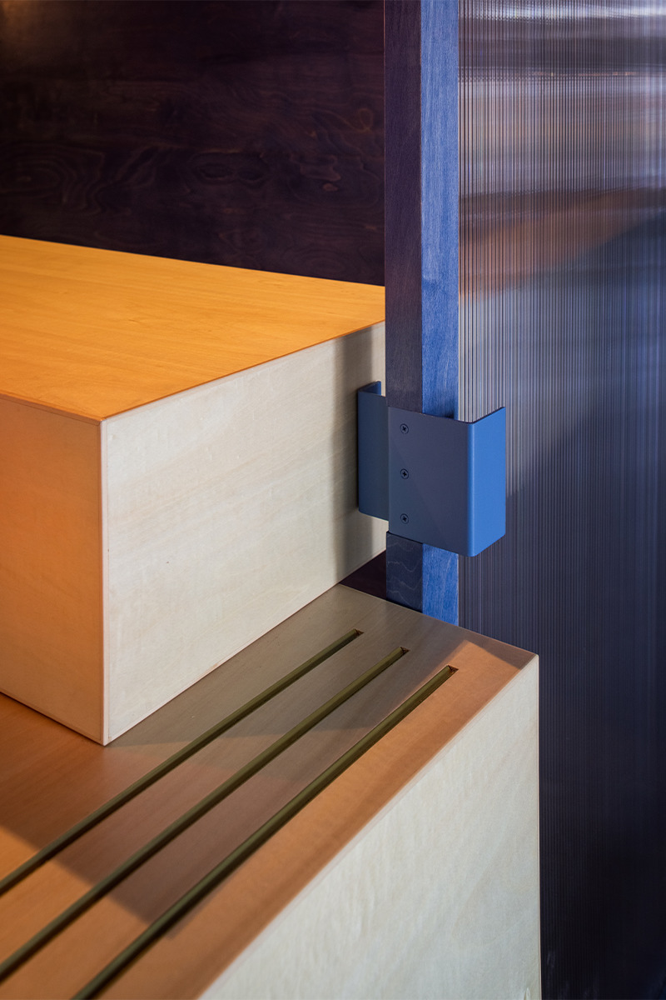
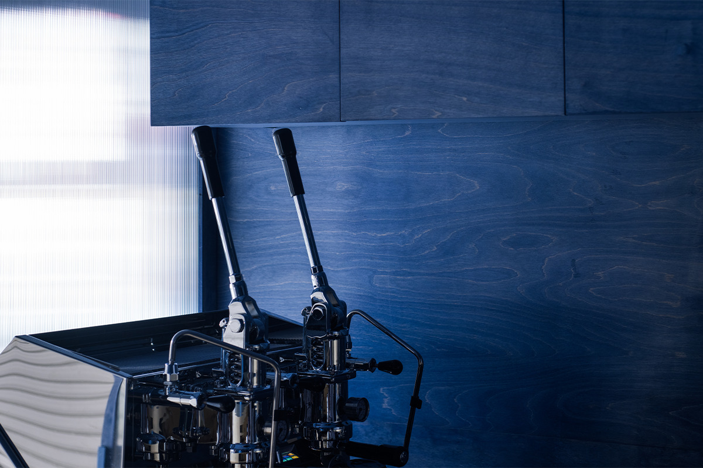
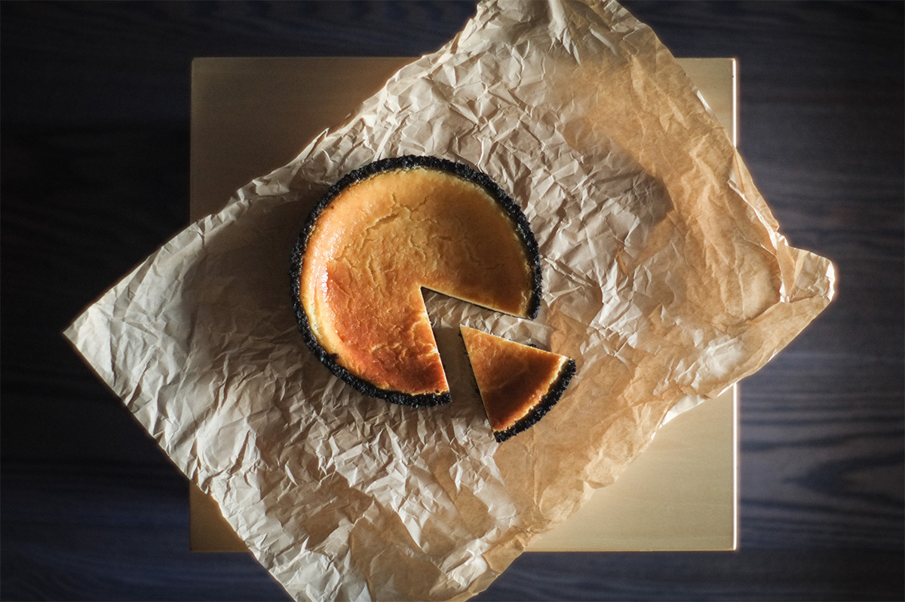
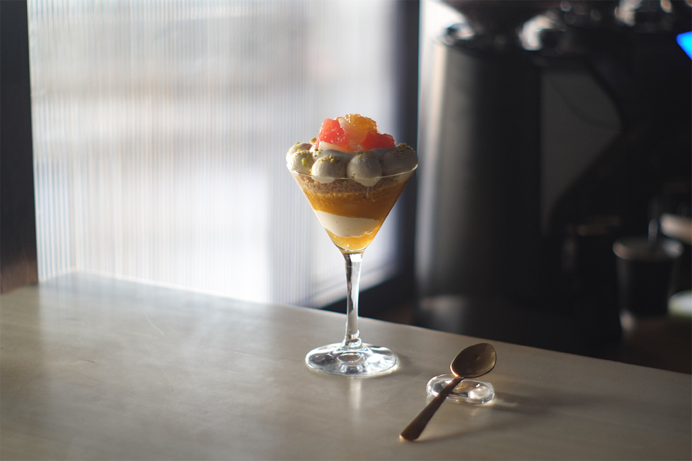
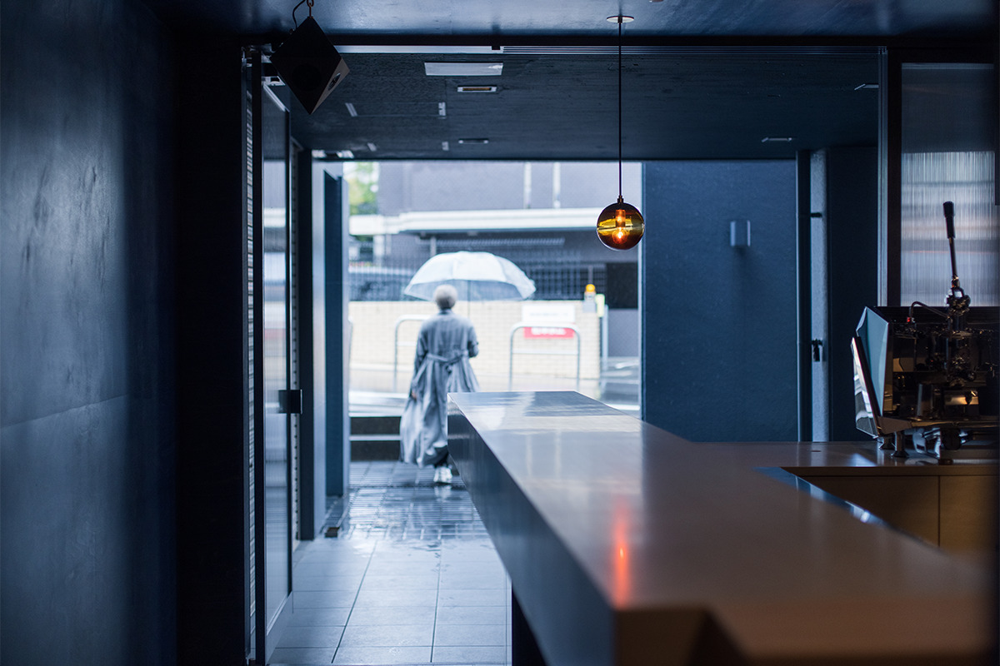

Префектура Нара · Гакуэммаэ · кофейня
Кофейня «Сюкуу» в Нара: синий дождь на стенах, эспрессо за полторы минуты и чизкейк

Название кофейни «Сюкуу» значит «затяжной дождь». Её хозяйка когда-то не любила дождь, пока однажды не увидела его отсюда, и тогда решила, что здесь будет место для тихой чашки кофе.
Идея
Кофейня, которая началась с дождя
Гакуэммаэ это жилой район на западе города Нара, вокруг одноимённой станции. Здесь, на первом этаже небольшого офисного здания, работает кофейня «Сюкуу». Её площадь всего 5,5 цубо, около 18 квадратных метров, но тесноты в ней не чувствуется.
Всё началось с простого желания хозяйки: открыть в Гакуэммаэ место, куда можно запросто зайти за хорошим кофе. Не меньше значило и само помещение. Впервые она приехала посмотреть его в начале сезона дождей, днём, когда без остановки моросил тихий дождь. До тех пор дождь казался ей чем-то унылым. Но когда она выглянула наружу из глубины помещения, мелкий бесконечный дождь показался ей очень красивым, а проведённые там минуты стали спокойным временем наедине с собой.

Так появилась кофейня, где можно провести такое же тихое время с хорошим кофе и чизкейком.
Дизайн
Синее дерево вместо вывески
Интерьер придумал Рёта Танака из студии MIRROR. Первая просьба хозяйки звучала так: выразить необычное название самим пространством.
Помещение спрятано в глубине первого этажа. Дизайнеру понравилось, что от улицы до входа приличное расстояние, а перед дверью есть общий навес здания. Он окрасил дерево в тёмно-синий цвет и обшил им всё пространство, а рисунок волокон должен напоминать струи дождя и круги на лужах.

Фасад здания тоже тёмно-синий, поэтому кофейня сливается с ним, и граница между внутренним и наружным пространством почти исчезает. Вывеску решили не вешать вовсе: она стала бы как раз той границей, от которой хотели избавиться. Синий цвет и волокна дерева открываются постепенно, и гость входит в мир «Сюкуу» без всякого напряжения.
Мебель
Стойка, которая «высыпается» на улицу
Мебель сложена из деревянных блоков, сдвинутых друг относительно друга. Высота у них разная, в зависимости от того, для чего они нужны. Часть блоков выдвигается и служит столиками снаружи, а табуреты можно вынуть и вынести за дверь.

Мебель должна была соединять зал и улицу и приглашать гостей выйти наружу. Общая большая мебель ставит всех на равных: улицу и зал, одних гостей и других, гостей и бариста.

Обычно дверь удерживает отдельный упор. Здесь эту работу делает стойка: деталей меньше, и фасад выглядит чище. В маленьком помещении дизайнер старался дать каждой вещи несколько задач.
Кофе
Эспрессо, который варится полторы минуты
Эспрессо готовят на рычажной машине, каких в 2022 году в Японии было лишь несколько. Обычно одна порция эспрессо проливается секунд за 27, а здесь около полутора минут. При медленной экстракции зерно отдаёт всё, что в нём есть, и эспрессо выходит насыщенным и сильным.

Зерно можно выбрать из двух сортов с разным характером. Тёмная обжарка даёт силу и глубину, светлая фруктовые ноты и чистый вкус. Сорта меняются по сезонам. Зерно бариста выбирает у разных обжарщиков по всей Японии, под сезон и под авторские напитки. Напитки на основе эспрессо придуманы так, чтобы их с удовольствием пили и те, кто кофе обычно не любит.
Десерт
Чизкейк к своей чашке
К кофе здесь подают чизкейки из сезонных продуктов, с разной текстурой и неожиданными переходами вкуса. Как их готовят, можно смотреть прямо через стойку. Каждый чизкейк придумывают с расчётом на тот кофе, что сейчас в меню, поэтому их интересно пробовать в паре.


Пространство, где зал и улица перетекают друг в друга, само зазывает внутрь, а запах кофе доходит до прохожих. Если будете в Нара, загляните в «Сюкуу» на чашку кофе с чизкейком.

Кофейня «Сюкуу»
- Адрес
- префектура Нара, город Нара, Гакуэн-кита, 1-1-11, здание «Ив», помещение 102
- Часы работы
- 13:00–20:00 (последний заказ 19:30)
- Выходные
- среда, четверг
- Как добраться
- около 130 м от станции Гакуэммаэ
- Сайт
Фото: Киёси Нисиока, Кэйсукэ Маки.